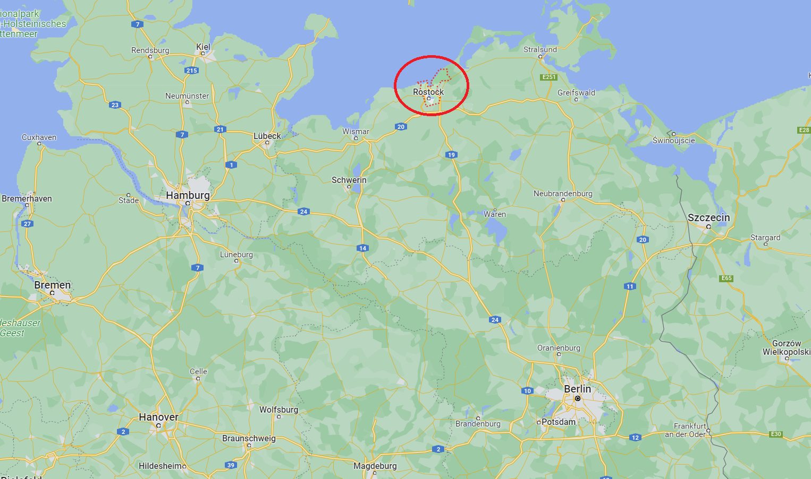
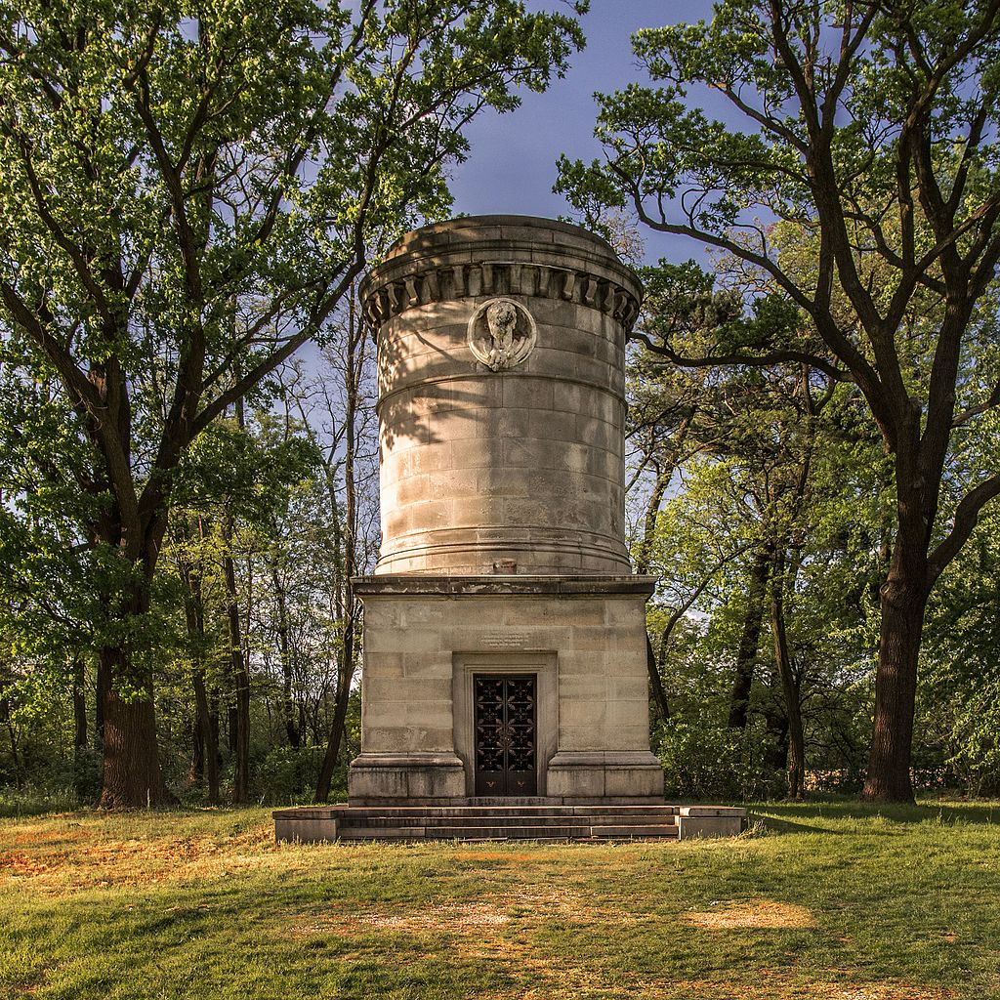
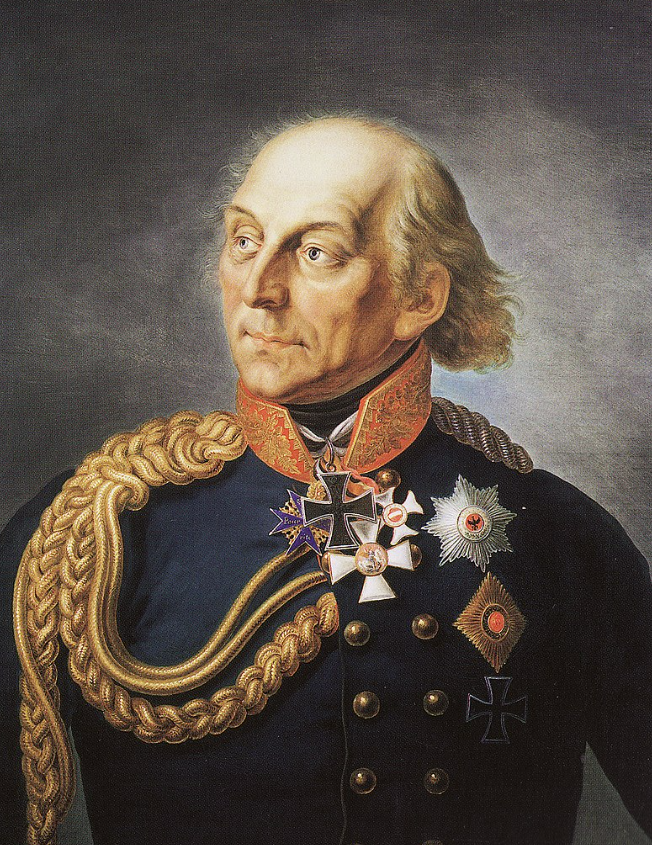

새로운 전쟁의 준비 (2) - 프로이센의 고민
게시: 2023-10-23T06:30:57+09:00
원래 7월 20일까지였던 휴전 기간은 양측의 합의 하에 8월 10일로 연장되었고, 그때까지 평화 협정이 이루어지지 않더라도 전투가 재개되려면 6일 간의 유예기간을 기다려야 했습니다. 그러니까 전투가 재개되는 것은 8월 17일 새벽 0시부터였습니다. 사실상 건성이었던 평화 협상에 희망을 걸고 있는 사람은 아무도 없었고, 양측은 8월 17일의 전투 재개만 기다리고 있는 중이었습니다. 이를 기다리며 준비하는 양측의 상황은 어땠을까요? 프로이센군은 전반적으로 사기가 높은 편이라고 다들 말했습니다. 비록 뤼첸-바우첸에서 2연패를 당했으므로 4월달에 처음 출정할 때처럼 희망만 있는 상황은 아니었지만, 자신들이 패배한 것이 아니라 소극적인 러시아군이 후퇴하는 바람에 어쩔 수 없었다는 분위기였습니다. 무엇보다 그 무시무시한 나폴레옹을 상대로 자신들이 잘 싸웠다는 것은 일개 병사들도 잘 알고 있었고, 이제 오스트리아까지 참전하여 머릿수가 더 많아졌으니 이번에는 진짜 해볼 만하다는 자신감이 있었습니다. 하지만 전쟁이라는 것은 결코 유쾌한 축제가 아니라 위험천만한 모험이자 심각한 사업이었습니다. 당연히 많은 어려움과 갈등이 뒤따랐습니다. 먼저 인사가 만사라더니, 블뤼허가 슐레지엔 방면군 총사령관이 된 것부터 또 잡음이 튀어나왔습니다. 4월에 춘계작전을 시작할 때부터도 블뤼허가 프로이센군 총사령관이 되는 것에 대해서는 프로이센 내부에서 불만이 많았고, 그 분위기는 뤼첸-바우첸에서 프로이센군이 잘 싸웠음에도 불구하고 8월이 되어서도 전혀 달라지지 않았습니다. 대체 왜 그랬을까요? 먼저, 블뤼허는 전통적인 프로이센 귀족층들로부터 강한 반감을 사는 인물이었습니다. 그는 프로이센 귀족 출신이 아니라 메클렌부르크-슈베린(Mecklenburg-Schwerin) 공국 태생의 하급 귀족 출신이었고 애초에 프로이센군에 입대한 것도 아니라 스웨덴군에서 임관하여 군 생활을 시작한 사람이었습니다. 심지어 스웨덴군으로서 프로이센군에 맞서 싸우다 프로이센군의 포로가 된 이후 프로이센군으로 진영 변경을 한 기연을 겪어 오늘 날에 이르렀지요. 하지만 프로이센 귀족층이 그를 싫어한 것은 꼭 출신 때문만은 아니었고, 그의 성격 때문이었습니다. 그는 반골 기질이 뚜렷하여 젊은 시절 일개 대위 신분으로서 프리드리히 대왕에게 반항하다 군에서 쫓겨날 정도였습니다.

(블뤼허가 왜 스웨덴군에 입대했는지는 그의 고향 로스톡의 위치를 보면 이해하실 수 있을 것입니다. 로스톡은 한자 동맹 도시 중 하나였고, 그 바로 동쪽은 스웨덴령 포메른이었습니다. 그러니까 바로 옆동네에 일자리를 찾아 입대했다고 보시면 됩니다.)

(블뤼허는 슐레지엔에 있는 자신의 영지인 크리블로비츠(Krieblowitz, 폴란드어로 크로비엘로비처 Krobielowice)애서 말년을 보내다 1819년 76세로 죽었습니다. 그의 시신은 그의 영지에 지어진 사진 속처럼 거창한 묘역에 안장되었습니다만, 지금 저 묘역에 그의 뼈는 없습니다. 그 이야기는 좀 참혹한데, 제2차 세계대전의 패배 때 크리블로비츠를 점령한 소련군 병사들이 그의 묘역을 훼손하고 그의 시신까지 끌어내어 마구 집어 던졌으며, 전해지는 바에 따르면 그의 두개골로 자기들끼리 축구를 했다고 합니다. 패전한 독일은 슐레지엔 등 동부 영토 상당 부분을 폴란드에 내주어야 했고 크리블로비츠도 그 때 폴란드 땅 크로비엘로비처(Krobielowice)가 되었습니다.) 그러나 공식적인 반대 이유로 모난 성격 탓을 할 수는 없었으니 반대파들은 다른 이유를 내세워야 했는데, 문제는 그렇게 지적당한 블뤼허의 단점이 다 상당히 말이 되는 것들이었다는 점이었습니다. 71세의 고령이라서 전투 현장 지휘는 어렵다, 건강이 좋지 않아 자주 드러눕는다, 그런데도 지나친 음주로 취하는 경우가 많다, 도박을 좋아한다, 기병대 지휘 경험만 있어서 보-기-포병 연합 작전에 서툴다, 2만 이상의 군단을 지휘해본 경험이 없는 사람이 10만 방면군을 어떻게 지휘한단 말인가 등등... 그런데도 블뤼허가 총사령관이 된 것은 그때나 지금이나 샤른호스트와 그나이제나우 등의 개혁파가 블뤼허를 전적으로 지지했기 때문이었습니다. 당시 프로이센 참모부를 장악하고 있던 이들이 사실상 프로이센군의 두뇌였는데, 이들은 자신들의 뜻대로 움직여줄 별 생각 없이 무식하지만 용감한 인물을 필요로 했습니다. 블뤼허보다 그 조건에 딱 맞는 사람은 없었습니다. 그러나 그들의 지지만으로는 방면군 지휘권을 확보할 수는 없었습니다. 블뤼허는 프리드리히 빌헬름과 더 나아가 짜르 알렉산드르의 지지도 확보할 수 있었는데, 이는 샤른호스트-그나이제나우와 뜻을 같이 하는 개혁파이자 전직 총리였던 슈타인(Heinrich Friedrich Karl vom und zum Stein)과 현직 총리인 하르덴베르크 덕분이었습니다. 특히 슈타인은 1808년 나폴레옹의 박해를 피해 러시아로 망명을 갔었는데, 1810년 이후 러시아와 프랑스의 관계가 험악해지자 프로이센의 개혁파들이 보내오는 편지를 꾸준히 알렉산드르에게 전달하면서 반(反)나폴레옹파의 상징적 인물로 떠오르던 블뤼허에 대한 신뢰를 구축한 바 있었습니다. 블뤼허 반대파는 요크 장군이 슐레지엔 방면군 사령관이 되어야 한다고 주장했고, 실제로 그는 1813년 당시 54세로서 아직 한창 나이였을 뿐만 아니라 휘하 젊은 장교들과 병사들로부터 절대적인 인망을 얻고 있는 인물이었습니다. 그러나 샤른호스트와 그나이제나우는 그를 좋게 보지 않았습니다. 이유는 다소 뜻밖에도 그가 일반 사병들을 너무 아꼈기 때문이었습니다. 그는 병사들의 불필요한 고난과 희생을 막기 위해 샤른호스트와 그나이제나우의 작전안에 대해 이러쿵저러쿵 토를 달며 저항했는데, 이는 개혁파 인물들이 바라는 '용감한 허수아비' 장군과는 거리가 먼 모습이었습니다. 샤른호스트-그나이제나우는 그저 단순무식하면서도 낙천적인 블뤼허를 더 선호했습니다.

(요크의 노년 모습입니다. 나폴레옹보다 10살 위였던 그는 개혁파는 아니었지만 그렇다고 고위 귀족 출신도 아니었습니다. 그다지 좋은 집안 출신이 아니던 그는 젊어서부터 상관의 명령에 대해 쓴 소리를 겁내지 않는 성격까지 갖추고 있었기 때문에 순탄한 군 생활을 하지 못했는데, 그 와중에 본인이 많은 고생을 하며 병사들의 고충을 알게 되었다고 합니다. 그는 13살에 프로이센군에 입대하여 5년 만에 소위로 임관했으나, 불과 2년 만에 상관 항명죄로 계급장을 뜯기고 1년간 투옥되었습니다. 이유는 당시 바이에른 왕위 계승 전쟁에 참전했던 그의 부대 지휘관이 저지른 약탈 행위를 20살 짜리 젊은 요크 소위가 비난했기 때문이었습니다. 풀려난 뒤에도 프리드리히 대왕 휘하로 복직이 거부되자, 그는 네덜란드 동인도 회사에 고용된 스위스 용병부대에 대위로 들어가 인도네시아에서 복무하는 등 여기저기서 용병 생활을 했습니다. 심지어 아프리카 남쪽 끝 케이프타운에서 프랑스군 소속으로 영국군과 싸우기도 했습니다. 그는 프리드리히 대왕이 사망한 뒤에야 프로이센으로 돌아올 수 있었고 결국 33세에야 소령 계급으로 프로이센군에 복직할 수 있었습니다. 그는 1814년 파리 점령전까지 참전했으나, 1815년 나폴레옹의 백일천하 때는 야전군에 전혀 보직을 받지 못했습니다. 이유는 만에 하나라도 고령인 블뤼허가 건강 문제로 쓰러질 경우 그나이제나우가 그 지휘권을 이어받아야 하는데 그나이제나우보다 서열에서 앞서는 인물이 존재하면 곤란했기 때문이었습니다. 그는 모욕감을 느끼고 사임서를 제출했으나 받아들여지지 않았고, 훗날 원수로 승진도 했습니다. 그러나 끝내 야젼군 지휘권은 주어지지 않았습니다.) 하지만 이런 인선 문제는 프로이센군이 봉착한 문제 중 하찮은 것에 불과했습니다. 가장 큰 문제는 물질적인 것이었습니다. 앞서 그롤만 소령이 그나이제나우에게 '우리가 바클레이의 러시아군과 함께 보헤미아로 떠나니 골칫거리가 다 사라져서 좋으시겠습니다'라고 냉소적 농담을 했다는 일화를 전해드렸습니다만, 하르덴베르크는 보헤미아로 떠나는 프로이센군 군단들 때문에 공황상태였습니다. 이들이 오스트리아령 보헤미아로 간다고 해서 오스트리아가 이들을 먹여 살릴 비용을 대는 것은 아니었습니다. 따라서 거기로 떠나는 군단들에게 현지에서 식량을 구매할 군자금을 쥐여 보내야 했는데 돈이 없었던 것입니다. 없는 것은 돈뿐만이 아니었습니다. 병사들에게 줄 무기와 군복, 군화도 크게 부족했습니다. 거기서 끝이면 좋겠으나 사람도 부족했습니다. 이미 병력은 충분하지 않았나요? 충분하지 않아서 제대로 된 병사들을 뽑지 못하고 제2선급 자원을 마구 뽑아서 채워야 했습니다. 즉 정규군 대신 국민방위군(Landwehr)를 대거 뽑았던 것입니다. 당시 전체 인구가 5백만 정도이던 프로이센은 총 27만5천의 병력을 동원했는데, 그 중에는 10만의 국민방위군이 포함되어 있었습니다. 그런데 그 비중이 방면군 별로 조금씩 달랐습니다. 전체 대대 중 국민방위군으로 편성된 대대의 비중은 북부 방면군 소속 뷜로 군단의 경우 41개 대대 중 12개 대대, 보헤미아 방면군 소속 클라이스트 군단은 41개 대대 중 16개 대대였습니다만, 슐레지엔 방면군의 요크 군단에서는 45개 대대 중 무려 24개 대대나 되었습니다. 누가 봐도 슐레지엔 방면군은 보조 군대적인 성격이 강했습니다. 그러다보니 물자 지원도 슐레지엔 방면군에 대해서는 다소 소홀할 수 밖에 없었습니다. '다소 소홀'이라는 말은 꽤 모호합니다. 과연 어느 정도였을까요? Source : The Life of Napoleon Bonaparte, by William Milligan Sloane Napoleon and the Struggle for Germany, by Leggiere, Michael V https://en.wikipedia.org/wiki/Gebhard_Leberecht_von_Bl%C3%BCcher https://en.wikipedia.org/wiki/Ludwig_Yorck_von_Wartenburg